토목기사 (2006-03-05 기출문제)
1과목: 응용역학
1. 그림과 같은 지름 d인 원형단면에서 최대 단면계수를 갖는 직사각형 단면을 얻으려면 b/h 는?
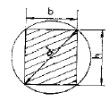
- 1
- 1/2
- 1/√2
- 1/√3
(정답률: 알수없음)

2. 나무기둥의 단면이 폭 10cm, 높이 15cm이며 길이 3m의 일단 고정, 타단 자유단의 나무기둥이 있다. 안전율 S=10으로 취하면 자유단에는 몇 ㎏의 하중을 안전하게 받을 수 있는가? (단, 탄성계수 E = 1×106㎏/cm2)
- 7,720㎏
- 3,430㎏
- 77,200㎏
- 34,300㎏
(정답률: 28%)
3. 그림과 같은 보의 B점에서의 휨모멘트의 값은?
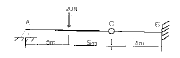
- -15.0 N・m
- -30.0 N・m
- -45.0 N・m
- -60.0 N・m
(정답률: 알수없음)
4. 다음 그림과 같은 캔틸레버보에 휨모멘트 하중 M이 작용할 경우, 최대처짐 δmax의 값은? (단, 보의 휨강성은 EI 임)
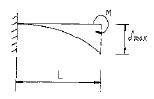
- ML/EI
- ML2/2EI
- M2L/2EI
- ML2/6EI
(정답률: 55%)
5. 폭 2cm, 높이 5cm인 어느 균일단면의 단순보에 최대전단력이 1,000kg 작용한다면 최대전단응력은?
- 66.7kg/cm2
- 100.0kg/cm2
- 133.0kg/cm2
- 150.0kg/cm2
(정답률: 28%)
6. 그림과 같이 상단이 고정되어 있는 봉의 하단에 축하중 P가 작용할 때 이 봉의 늘음량은? (단, 봉의 자중은 무시하고 봉의 단면적은 A, 봉의 길이는 ℓ, 탄성계수는 E로 한다.)
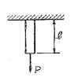
- Pℓ/AE
- AE/Pℓ
- P2ℓ/2AE
- Pℓ/2AE
(정답률: 67%)
7. 다음과 같은 3활절 아아치에서 C점의 휨 모멘트는?
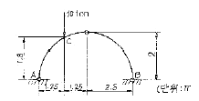
- 3.25 ton・m
- 3.50 ton・m
- 3.75 ton・m
- 4.00 ton・m
(정답률: 75%)
8. 그림과 같은 트러스에서 V의 부재력 값은?
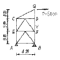
- -6.67 ton
- -6.25 ton
- -3.75 ton
- -7.5 ton
(정답률: 알수없음)
9. 다음 그림과 같은 양단 고정보에서 보 중앙의 휨모멘트는 얼마인가?
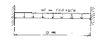
- 10 ㎏・m
- 20 ㎏・m
- 30 ㎏・m
- 40 ㎏・m
(정답률: 34%)
10. 탄성변형에너지는 외력을 받는 구조물에서 변형에 의해 구조물에 축적되는 에너지를 말한다. 탄성체이며 선형고동을 하는 길이가 L인 켄틸레버보에 집중하중 P가 작용할 때 굽휨모멘트에 의한 탄성변형에너지는? (단 EI는 일정)
- P2L2/6EI
- P2L2/2EI
- P2L3/6EI
- P2L3/2EI
(정답률: 40%)
11. 그림과 같이 단순보에 하중 P가 경사지게 작용시 A점에서의 수직반력 V4를 구하면?
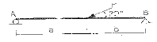
- Pb/(a+b)
- Pb/2(a+b)
- Pa/(a+b)
- Pa/2(a+b)
(정답률: 22%)
12. 아래 그림과 같은 불규칙한 단면의 A-A축에 대한 단면 2차 모멘트는 35×106㎜4이다. 만약 단면의 총 면적이 1.2×104mm2이라면, B-B축에 대한 단면2차 모멘트는 얼마인가? (단, D-D축은 단면의 도심을 통과한다.)
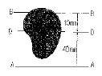
- 15.8×106㎜4
- 17×106㎜4
- 17×105㎜4
- 15.8×105㎜4
(정답률: 34%)
13. 그림과 같은 단순보에서 C~D구간의 전단력 Q의 값은?
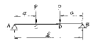
- +P
- -P
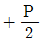
- 0
(정답률: 알수없음)
14. 두 평행하는 힘의 합력점은 어디에 있는가?
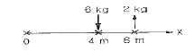
- 0 점에서 우로 3m
- 0 점에서 우로 5.56m
- 0 점에서 좌로 5.56m
- 0 점에서 좌로 3m
(정답률: 27%)
15. 오른쪽 그림에서 블록 A를 뽑아내는데 필요한 힘 P는 최소 얼마 이상이어야 하는가? (블록과 접촉면과의 마찰계수 μ=0.3 )
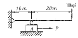
- 3㎏ 이상
- 6㎏ 이상
- 9㎏ 이상
- 12㎏ 이상
(정답률: 55%)
16. 단면적 20cm2인 구형봉에 P=10ton의 수직하중이 작용할 때 그림과 같은 45° 경사면에 생기는 전단 응력의 크기는?
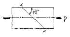
- 750㎏/cm2
- 500㎏/cm2
- 250㎏/cm2
- 633㎏/cm2
(정답률: 14%)
17. 단면 10cm(b)×15cm(h)인 단주에서 편심 1.5cm인 위치에 P=12,000㎏의 하중을 받을 때 최대응력은?
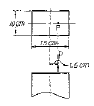
- 84㎏/cm2
- 106㎏/cm2
- 128㎏/cm2
- 152㎏/cm2
(정답률: 34%)
18. 외력을 받는 임의 구조물에 있어서 i 점에 작용하는 하중 Pi에 의한 k점의 변위량을δki, k점에 작용하는 하중 Pk에 의한 I점의 변위량을 δki라 했을때, 상반작용의 원리(reciprocal theorem)를 나타내는 식은?
- Piδik=Piδki
- Piδki=Pkδik
- Piδk=δikδki
- δik=δki
(정답률: 47%)
19. 다음의 보에서 점 C의 처짐은?
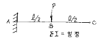
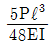
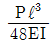
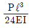
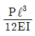
(정답률: 24%)
20. 다음 라멘의 부정정 차수는?
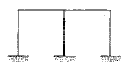
- 3차
- 5차
- 6차
- 7차
(정답률: 42%)
2과목: 측량학
21. 어떤 다각형의 전측선의 길이가 900m일 때 폐합비를 1/5,000로 하기 위해서는 축척 1/500의 도면에서 폐합오차는 얼마까지 허용되는가?
- 0.26mm
- 0.36mm
- 0.46mm
- 0.50mm
(정답률: 60%)
22. 도로의 중심선을 따라 20m 간격으로 종단측량을 실시한 결과가 다음과 같다. 측점 No.1의 도로 계획고를 표고 21.50m로 하고 2%의 상향구배의 도로를 설치하면 No.5의 절토고는? (단, 지반고의 단위는 m임)
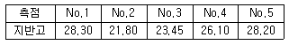
- 4.70m
- 5.10m
- 5.90m
- 6.10m
(정답률: 31%)
23. 측점 A,B,C가 이루는 구면삼각형의 면적이 983km2일 때 이 구면삼각형의 내각의 합은 얼마이어야 하는가? (단, 지구의 곡률반경은 6,370km로 가정한다.)
- 179° 59′ 50″
- 179° 59′ 55″
- 180° 00′ ⑤″
- 180° 00′ 10″
(정답률: 37%)
24. 시거측량에 있어서 협장에 오차가 없고 고저각 α에 10′′의 오차가 있다고 가정하면 수직거리에 생기는 오차는 얼마인가? (단, K=100, C=0, ℓ= 1m, a= 30°)
- 12mm
- 6mm
- 4.8mm
- 2.4mm
(정답률: 37%)
25. 삼각수준측량의 관측값에서 대기의 굴절오차(기차)와 지구의 곡률오차(구차)의 조정방법중 옳은 것은?
- 기차는 높게, 구차는 낮게 조정한다.
- 기차는 낮게, 구차는 높게 조정한다.
- 기차와 구차를 함께 높게 조정한다.
- 기차와 구차를 함께 낮게 조정한다.
(정답률: 47%)
26. 측점이 갱도(坑道)의 천정(天井)에 설치되어 있는 갱내수준측량에서 아래 그림과 같은 관측결과를 얻었다. A점의 지반고가 15.32m일 때 C점의 지반고는?
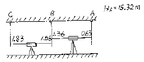
- 16.49m
- 16.32m
- 14.49m
- 14.32m
(정답률: 59%)
27. 10m2의 정사각형의 토지의 면적을 0.1m2까지 정확하게 구하기 위한 필요하고도 충분한 한변의 측정거리 오차는?
- 3mm
- 4mm
- 5mm
- 6mm
(정답률: 38%)
28. 항공사진 측량에서 산약지역이라 함은 다음 중 어느 것을 의미하는가?
- 평탄지역에 비하여 경사조정이 편리한 곳
- 산이 많은 지역
- 한 모델상에 고저차가 비행고도의 10%이상인 지역
- 표정시 산정과 협곡에 시차분포가 균일한 곳
(정답률: 40%)
29. 완화곡선의 성질에 대한 설명으로 잘못된 것은?
- 곡선반경은 완화곡선의 시점에서 무한대이다.
- 완화곡선의 접선은 시점에서 직선이다.
- 곡선반경의 감소율은 캔트의 증가율과 같다.
- 중점에서의 캔트는 원곡선의 캔트와 역수관계이다.
(정답률: 36%)
30. 매개변수 A=120m인 클로소이드를 설치하려고 한다. 클로소이드 시점으로부터 30m 지점의 곡률반 경(ρ)과 클로소이드의 길이(L)는 얼마인가? (단, 원곡선의 곡률반경(R)=200m이다.)
- ρ=960m, L=72m
- ρ=960m, L=30m
- ρ=480m, L=72m
- ρ=480m, L=30m
(정답률: 24%)
31. 표준길이에 비하여 2cm 늘어난 50m 줄자로 사각형 토지의 길이를 측정하여 면적을 구하였을 때, 그 면적이 88m2이었다. 이 토지의 정확한 면적은?
- 88.02m2
- 88.⑤m2
- 88.07m2
- 88.09m2
(정답률: 34%)
32. 다음 중 지구좌표계에 대한 설명으로 옳지 않은 것은?
- 준거타원체에 대한 한 지점의 위치를 경도, 위도 및 평균해수면으로부터의 높이로 표시한 것은 측 지측량좌표 또는 지리좌표라 한다.
- UPS좌표계는 위도 80° 이상의 양극을 원점으로 하는 평면직교좌표계를 사용한다.
- 국제지구기준좌표계(ITRF)는 좌표원점을 태양 중심으로 한 국제기준계이다.
- GPS의 좌표계는 국제측지기준좌표계인 WGS84를 이용한다.
(정답률: 14%)
33. B.C의 위치가 NO.12+16.404m이고, E.C의 위치가 NO.19+13.52m일 때, 시단현과 종단현에 대한 편각은? (단, 곡선반경은 200m, 중심말뚝의 간격은 20m, 시단현에 대한 편각은 δ1, 종단현에 대한 편각은 δ2임.)
- 1° 22′ 28″, 1° 56′ 12″
- 1° 56′ 12″, 0° 30′ 54″
- 1° 30′ 54″, 1° 55′ 12″
- 1° 56′ 12″, 0° 22′ 28″
(정답률: 0%)
34. 다음 트래버어스에서 AB측선의 방위각이 19° 48′ 26″, CD측선의 방위각이 310° 36′43″, 교각의 총 합이650° 48′ 5′′일때 각 관측오차는?
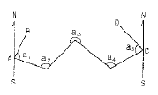
- +10″
- -12″
- +18″
- -23″
(정답률: 42%)
35. 방위각과 방향각의 차이에 대한 설명으로 옳은 것은?
- 방위각은 진북을 기준으로 한 것이며, 방향각은 적도를 기준으로 한 것이다.
- 방위각은 진북방향과 측선이 이루는 우회각이고 방향각은 기준선과 측선이 이루는 우회각이다.
- 방위각과 방향각은 동일한 것이다.
- 방위각은 우측으로 잰 각이며, 방향각은 이와 반대로 좌측으로 잰 각이다.
(정답률: 60%)
36. 아래 그림과 같이 M 점의 표고를 구하기 위하여 수준점(A, B, C)들로부터 고저측량을 실시하여 아래 표와 같은 결과를 얻었다. 이때 M 점의 평균표고는 얼마인가?(오류 신고가 접수된 문제입니다. 반드시 정답과 해설을 확인하시기 바랍니다.)
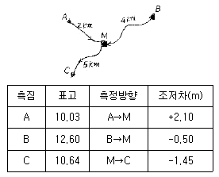
- 12.07m
- 12.09m
- 12.11m
- 12.13m
(정답률: 55%)
37. 사진의 크기와 촬영고도가 같을 경우 초광각 사진기에 의한 촬영지역의 면적은 광각의 경우 약 몇 배가 되는가?
- 0.3배
- 1배
- 3배
- 5배
(정답률: 알수없음)
38. 다음은 하천측량에 관한 설명이다. 틀린 것은?
- 수심이 깊고, 유속이 빠른 장소에는 음향 측심기와 수압측정기를 사용한다.
- 1점법에 의한 평균유속은 수면으로부터 수심 0.6H 되는 곳의 유속을 말한다.
- 평면 측량의 범위는 유제부에서 제내지의 전부와 제외지의 300m 정도, 무제부에서는 홍수의 영향이 있는 구역을 측량한다.
- 하천 측량은 하천 개수공사나 하천공작물의 계획, 설계, 시공에 필요한 자료를 얻기 위하여 실시한다.
(정답률: 47%)
39. 교점(I.P)의 위치가 기점으로부터 400m, 곡선반경 R=200m, 교각 I=90°인 단곡선을 편각법에 의해측설하고자 한다. 기점으로부터 곡선지점(B,C)의 추가거리는?
- 180m
- 190m
- 200m
- 600m
(정답률: 31%)
40. 곡선부를 통과하는 차량에 원심력이 발생하여 접선 방향으로 탈선하는 것을 방지하기 위해 바깥쪽의 노면을 안쪽보다 높여주는 것을 무엇이라 하는가?
- 클로소이드
- 슬랙
- 캔트
- 편각
(정답률: 20%)
3과목: 수리학 및 수문학
41. 정상류 비압축성 유체에 대한 다음의 속도성분 중에서 연속방정식을 만족시키는 식은?
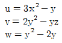
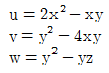
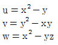
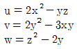
(정답률: 7%)
42. 폭이 10m 이고 20m3/sec의 물이 흐르고 있는 직사각형 단면수로의 한계수식은? (단, 에너지 보정계수 α=1.1이다.)
- 66.57cm
- 76.57cm
- 86.57cm
- 96.57cm
(정답률: 50%)
43. 다음의 강우강도에 대한 설명 중 틀린 것은?
- 강우깊이(mm)가 일정할 때 강우지속시간이 길면 강우강도는 커진다.
- 강우강도와 지속시간의 관계는 Talbot, Sherman, Japanese형 등의 경험공식에 의해 표현된다.
- 강우강도식은 지역에 따라 다르며, 자기우량계의 우량자료로부터 그 지역의 특성 상수를 결정한다.
- 강우강도식은 댐, 우수관거 등의 수공구조물의 중요도에 따라 그 설계 재현기간이 다르다.
(정답률: 53%)
44. 다음 중 옳지 않은 것은?
- 피토관은 Pascal의 원리를 응용하여 압력을 측정하는 기구이다.
- Venturimeter는 관내의 유량 또는 평균 유속을 측정할 때 사용된다.
- V=√2gh를 Torricelli의 정리라고 한다.
- 수조의 수면에서 h인 곳에 단면적 a인 작은 구멍으로부터 물이 유출할 경우 Bernoulle의 정리를 적용한다.
(정답률: 12%)
45. 그림과 같은 관수로의 말단에서 유출량은? (단, 입구손실계수=0.5, 만곡손실계수=02., 출구 손실계수=1.0, 마찰손실계수=0.02이다.)
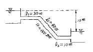
- 724 L/sec
- 824L/sec
- 924L/sec
- 1024L/sec
(정답률: 8%)
46. 그림에서 수조 내의 높이 h가 일정하게 물을 공급할 때 C점에 유속vc=10m/sec가 되도록 유지하기 위한 h는? (단, 수조내의 유속 vA는 무시)
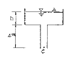
- 2.0m
- 1.7m
- 1.4m
- 1.1m
(정답률: 알수없음)
47. 수평면상 곡선수로의 상류(常流)에서 비회전흐름의 경우, 유속 V와 곡률반경 R의 관계로 옳은 것은? (단, C는 상수)
- V=CR
- VR=C
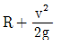
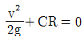
(정답률: 알수없음)
48. 다음 중 수위-유량 관계곡선의 연장 방법이 아닌 것은?
- 전 대수지법
- Stevens 방법
- Manning 공식에 의한 방법
- 유량 빈도 곡선법
(정답률: 22%)
49. 그림과 같이 물을 가득 채운 용기가 있다. A점은 표준대기에 접하고 있을 때 B점의 절대압력은?
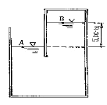
- 0.1533kg/cm2
- 0.5330kg/cm2
- 1.5330kg/cm2
- 5.3330kg/cm2
(정답률: 43%)
50. 지하수의 흐름을 나타내는 Darcy 법칙에 관한 설명 중 틀린 것은?
- Re>10인 흐름과 대수층 내에 모관수대가 존재하는 흐름에만 적용된다.
- 투수물질은 균질 등방성이며, 대수층내의 모관수대는 존재하지 않는다.
- 유속은 토양간극사이를 흐르는 평균유속이며, 동수경사에 비례한다.
- 투수계수는 물의 흐름에 대한 흙의 저항정도를 표현하는 계수로서 속도와 차원이 같다.
(정답률: 31%)
51. 레이놀드(Reynolds)수가 1000인 관에 대한 마찰손실계수(f)는?
- 0.032
- 0.046
- 0.⑤2
- 0.064
(정답률: 46%)
52. 월류수심 40cm인 전폭 위어의 유량을 Francis 공식에 의해 구하였더니, 0.40m3였다. 이때 위어 폭의 측정에 2mm의 오차가 발생했다면 유량의 오차는 몇 %인가?
- 1.16%
- 1.50%
- 2.00%
- 2.33%
(정답률: 8%)
53. 수문을 갑자기 닫아서 물의 흐름을 막으면 상류(上流)쪽의 수면이 갑자기 상승하여 단상(段狀)이 되고, 이것이 상류로 향하여 전파된다. 이러한 현상을 무엇이라고 하는가?
- 장파(長波)
- 단파(段波)
- 홍수파(洪水波)
- 파상도수(波狀跳水)
(정답률: 44%)
54. 내경 1800mm의 Steel pipe 내로 압력수두 120m의 압력수를 흐르게 할 때 강재(鋼材)의 허용 인장응력(許容 引張應力)이 1100kg/cm2이라면 강관(鋼管)의 최소 두께는?
- 12cm
- 1.2cm
- 98cm
- 0.98cm
(정답률: 8%)
55. 기온에 대한 다음 설명 중 옳지 않은 것은?
- 일 평균기온은 오전 10시의 기온이다.
- 정상일평균기온은 특정일의 30년 간의 일평균 기온을 평균한 기온이다.
- 월평균기온은 해당 월의 일 평균기온 중 최고치와 최저치를 평균한 기온이다.
- 연평균기온은 해당 년의 월 평균기온을 평균한 기온이다.
(정답률: 25%)
56. 관 벽면의 마찰력τ0, 유체의 밀도ρ, 점성계수를 μ라 할 때, 마찰속도(U*)는?
- τ0/ρμ
- √τ0/ρμ
- √τ0/ρ
- √τ0/μ
(정답률: 20%)
57. 그림과 같은 직사각형 수로에서 수로경사가 1/1,000인 경우 수로 바닥과 양벽면에 작용하는 평균 마찰응력은?
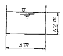
- 1.20kg/m2
- 1.⑤kg/m2
- 0.67kg/m2
- 0.82kg/m2
(정답률: 15%)
58. 어떤 도시의 하수도 계획에 있어서 20분간 계속 강우강도가 83.3mm/hr 일때 강우량은?
- 1666mm
- 555.3mm
- 55.53mm
- 27.8mm
(정답률: 47%)
59. 다음 중 유효강수량과 가장 관계가 깊은 것은?
- 직접유출량
- 기저유출량
- 지표면유출량
- 지표하유출량
(정답률: 34%)
60. 자유수면을 가지고 있는 깊은 우물의 유량공식은? (단, R=영향권의 반경, r0 =우물직경, h0=우물수심, H=원 지하수위, k=투수계수)
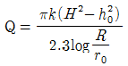
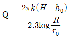
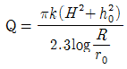
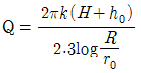
(정답률: 24%)
4과목: 철근콘크리트 및 강구조
61. 강도설계법에 의해서 전단철근을 사용하지 않고 계수하중에 의한 전단력 Vu=30kN을 지지하려면 직사각형 단면보의 최소면적은 약 얼마인가? (여기서,fck=28MPa)(오류 신고가 접수된 문제입니다. 반드시 정답과 해설을 확인하시기 바랍니다.)
- 82736mm2
- 85043mm2
- 96723mm2
- 169104mm2
(정답률: 25%)
62. 강도 설계에서 전단철근의 공칭 전단강도가(√fck/3)bw∙d를 초과하는 경우 전단철근의 최대 간격은? (단, bw는 복부의 폭이고 d는 유효깊이이다.)
- d/2이하, 600m 이하
- d/2이하, 300mm이하
- d/4이하, 600m 이하
- d/4이하, 300mm이하
(정답률: 25%)
63. 철근 콘크리트보에 스터럽을 배근하는 가장 중요한 이유로 옳은 것은?
- 주철근 상호간의 위치를 바르게 하기 위하여
- 보에 작용하는 사인장 응력에 의한 균열을 제어하기 위하여
- 콘크리트와 철근과의 부착강도를 높이기 위하여
- 압축측 콘크리트의 좌굴을 방지하기 위하여
(정답률: 50%)
64. b=300mm, d=460mm, As=6-D32(4765mm2), As′=2-D29(1284mm2), d'= 60mm인 복철근 직사각형 단면에서 파괴시 압축철근이 항복하는 경우 인장철근의 최대철근비를 구하면? (단, fck=35MPA, fy=350MPA)
- 0.03⑤
- 0.0352
- 0.0416
- 0.0437
(정답률: 19%)
65. PSC보의 휨 강도 계산 시 긴장재의 응력 fps의 계산은 강재 및 콘크리트의 응력-변형률 관계로부터 정확히 계산할 수도 있으나, 콘크리트구조설계기준에서는 fps 를 계산하기 위한 근사적 방법을 제시하고 있다. 그이유는 무엇인가?
- PSC 구조물을 강재가 항복한 이후 파괴까지 도달함에 있어 강도의 증가량이 거의 없기 때문이다.
- PS강재의 응력은 항복응력 도달 이후에도 파괴시까지 점진적으로 증가하기 때문이다.
- PSC 보를 과보가 PSC 보로부터 저보강 PSC보의 파괴상태로 유도하기 위함이다.
- PSC 구조물은 균열에 취약하므로 균열을 방지하기 위함이다.
(정답률: 30%)
66. 다음과 같은 직사각형보를 강도설계 이론으로 해석할 때, 콘크리트의 등가사각형 깊이 a는? (단, fck= 21MPA, fy= 300MPA)
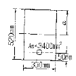
- 121.6mm
- 190.5mm
- 109.9mm
- 129.9mm
(정답률: 알수없음)
67. fck=28MPa, fy=350MPa로 만들어지는 보에서 압축이형철근D29(공칭지름 28.6㎜)를 사용한다면, 기본 정착길이는?
- 412㎜
- 446㎜
- 473㎜
- 522㎜
(정답률: 20%)
68. 아래그림의단철근T형보는 설계모멘트강도를 계산할때,플랜지 돌출부에 작용하는 압축력과 균형되는 가상 압축철근 단면적 Asf는 얼마인가? (여기서, fck=24MPa, fy=300MPa)
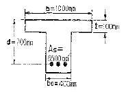
- 3208mm2
- 4080mm2
- 5126mm2
- 6⑤0mm2
(정답률: 알수없음)
69. 지름 450㎜인원형 단면을 갖는 중심축하중을 받는 나선철근 기둥에 있어서 강도 설RP법에의한 축방향 설계강도(øPn)는얼마인가? (단, 이기둥은단주이고, fck=27MPa, fy=350MPa,Asf=8-D22=3096mm2이다.)
- 1166KN
- 1299KN
- 2425KN
- 2972KN
(정답률: 25%)
70. 그림과 같은 2방향 확대 기초에서 하중계수가 고려된 계수하중Pu(자중포함)가 그림과 같이 작용할때, 위험단면의 계수전단력(Vu)은 얼마인가?(문제 오류로 시험지 원본 화질이 아주 좋지 못합니다. 정답은 3번입니다. 참고용으로만 이용 부탁 드립니다.)
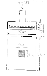
- Vu=1111.24kN
- Vu=1263.4kN
- Vu=1209.6kN
- Vu=1372.9kN
(정답률: 알수없음)
71. 기둥에 관한 구조세목 중 틀린 것은?
- 띠철근 기둥단면의 최소수치는 200㎜이상, 단면적은 60,000mm2이상이어야한다.
- 나선출근 단면 심부의 지름은 200㎜이상이고, 콘크리트 설계기준강도는 18MPa이상이어야 한다.
- 압축부재의 축방향 주철근의 최소갯수는 직사각형이나 원형 띠철근 내부의 철근의 경우는 4개로 하여야한다.
- 압축부재의 축방향 주철근의 최소갯수는 삼각형 띠철근 내부의 철근의 경우는 3개로 하여야한다.
(정답률: 19%)
72. 그림과 같은 필렛 용접에서 일어나는 응력이 옳게 된 것은?
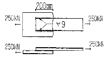
- 97.3MPa
- 98.2MPa
- 99.2MPa
- 100.0MPa
(정답률: 알수없음)
73. 일반적으로 물을 저장하는 수조 등과 같은 수밀성을 요구하는 구조물의 허용 균영폭은 얼마인가?
- 0.2㎜
- 0.4㎜
- 0.6㎜
- 0.8㎜
(정답률: 알수없음)
74. 휨부재의 처짐에 관한 다음 설명 중 맞지 않은 것은?
- 복철근으로 설계하면 장기처짐량이 감소한다.
- 균열리 발생하지 않은 단면의 처짐계산에서 사용되는 단면 2차모멘트는 철근을 무시한 콘크리트 전체 단면의중심축에 대한 단면2차모멘트(Ig)를 사용한다.
- 휨부재의 처짐은 사용하중에 대하여 검토한다.
- 장기처짐량은 단기처짐량에 반비례한다.
(정답률: 31%)
75. 콘크리트 보에서 균열이 발생하면 중립축의 위치가 갑자기 압축부위 축으로 올라가는데 그 이유는?
- 응력과 변형률의 비례관계가 성립하기 때문에
- 인장 균열이 발생한 깊이의 콘크리트 인장응력이 무시되기 때문에
- 균열부위의 전단저항력이 상실되기 때문에
- 인장철근의 환산단면적이 달라지기 때문에
(정답률: 37%)
76. 철근콘크리트보의 파괴거동 내용 중 잘못된 것은? (문제 오류로 실제 시험에서는 1, 4번이 정답처리 되었습니다. 여기서는 2번을 누르면 정답 처리 됩니다.)
- 최소 철근비(14/fy)보다 적은 철근량이 배근된 경우 인장부 콘크리트 응력이 파괴계수에 도달하면 균열과 동시에 취성파괴를 일으킨다.
- 과소철근으로 배근된 단면에서는 최종 붕괴가 생길때까지 큰 처짐이 생긴다.
- 과다철근으로 배근된 단면에서는 압축측 콘크리트의 변형률이 0.003에 도달할 때 인정철근의 응력은 항복응력보다 작다.
- 인장철근이 항복응력에 도달함과 동시에 콘크리트 압축변형률 0.003에 도달하도록 설계하는 것이 경제적이고 바람직한 설계이다.
(정답률: 12%)
77. 다음 그림과 같은 판에서 리벳 지름이 ø22mm일 때, 이 판의 순폭은 얼마인가?
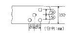
- 91 mm
- 100 mm
- 118 mm
- 124 mm
(정답률: 0%)
78. 부분적 프리스트레싱(Partial Prestressing)에 대한 설명으로 옳은 것은?
- 구조물에 부분적으로 PSC 부재를 사용하는것
- 부재단면의 일부에만 프리스트레스를 도입하는 것
- 설계하중의 일부만 프리스트레스에 부담시키고 나머지는 긴장재에 부담시키는 것
- 설계하중이 작용할 때 PSC 부재단면의 일부에 인장응력이 생기는 것
(정답률: 55%)
79. 철근콘크리트 깊은 보에 대한 다음 전단 설계 방법붕 잘못 된 것은? (단, ln은 받침부 내면 사이의 순 경간 이다.)
- 전단에 대한 위험단면은 받침부의 내면에서 등분 포하중을 받는 보에서는 0.15ln의 거리이며, d/2 보다는 크지않아야 한다.
- 수직전단철근의 간격은d/5 이하 또한 400mm 이하로 하여야 한다.
- 수평전단철근의 간격은 d/3 이하 또는 400mm 이하로 하여야 한다.
- 위험단면에서 요구되는 전단철근을 해당 경간 전체에 사용하여야 한다.
(정답률: 0%)
80. 프리스트레스트 콘크리트에 대한 설명으로 틀린 것은?
- PSC 그라우트의 물-시멘트 비는 45% 이하로 해야 한다.
- 팽창성 그라우트의 팽창률은 0~10%를 표준으로 한다.
- 프리스트레싱할 때의 콘크리트 압축강도는 프리 텐션방식에 있어서는 24MPa 이상이어야 한다.
- 프리스트레싱을 할 때의 콘크리트의 압축강도는 프리스트레스를 준 직후, 콘크리트에 일어나는최대 압축응력의 1.7배 이상이어야 한다.
(정답률: 17%)
5과목: 토질 및 기초
81. 간극비가 e1=0.80인 어떤 모래의 투수계수가 k1=8.5×10-2cm/sec일 때 이 모래를 다져서 간극비를 e2 = 0.57로 하면 투수계수 k2는?
- 8.5 × 10-3cm/sec
- 3.5 × 10-2cm/sec
- 8.1 × 10-2cm/sec
- 4.1 × 10-1cm/sec
(정답률: 29%)
82. 다음 중 연약점토지반 개량공법이 아닌 것은?
- Preloading 공법
- Sand drain 공법
- Paper drain 공법
- Vibro floatation 공법
(정답률: 22%)
83. 다음은 그라우팅에 의한 지반개량공법이다. 투수계수가 낮은 점토의 강도개량에 효과적인 개량공법은?
- 침투그라우팅
- 점보제트(JSP)
- 변위그라우팅
- 캡슐그라우팅
(정답률: 8%)
84. Trezsghi 는 포화점토에 대한 1차 압밀이론에서 수학적 해를 구하기 위하여 다음과 같은 가정을 하였다. 이중 옳지 않은 것은?
- 흙은 균질하다.
- 흙입자와 물의 압축성은 무시한다.
- 흙속에서의 물의 이동은 Darcy 법칙을 따른다.
- 투수계수는 압력의 크기에 비례한다.
(정답률: 알수없음)
85. 다음 그림의 불안전영역(unstable zone)의 붕괴를 막기 위해 강도가 더 큰 흙으로 치환을 하였다. 이 때 안정성을 검토하기 위해 요구되는 삼축압축 시험의 종류는 어떤 것인가?
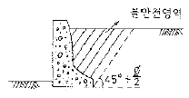
- UU-test
- CU-test
- CD-test
- UC-test
(정답률: 28%)
86. 흙의 포화단위중량이 2.0t/m3 인 포화점토층을 45°경사로 8m를 굴착하였다.흙의 강도 계수 Cu=6.5t/m2, øu=0°이다. 그림과 같은 파괴면에 대하여 사면의 안전율은? (단, ABCD의면적은 70m2이고 O점에서 ABCD의 면적은 70m2이고 O점에서 ABCD의무게중심까지의 수직거리는 4.5m이다.)
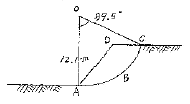
- 4.72
- 2.67
- 4.21
- 2.36
(정답률: 22%)
87. 흙의 전단강도에 대한 설명으로 틀린 것은?
- 조밀한 모래는 전단변형이 작을 때, 전단파괴에 이른다.
- 조밀한 모래는 (+)Dilatancy,느슨한 모래는 (-)Dilatancy가 발생한다.
- 점착력과 내부마찰각은 파괴면에 작용하는 수직응력의 크기에 비례한다.
- 전단응력이 전단강도를 넘으면 흙의 내부에 파괴가 일어난다.
(정답률: 29%)
88. 다음 중 투수계수를 좌우하는 요인이 아닌 것은?
- 토립자의 크기
- 공극의 형상과 배열
- 토립자의 비중
- 포화도
(정답률: 39%)
89. 간극비 0.8, 포화도87.5%, 함수비 25%인 사질점토에서 한계동수경사는?
- 1.5t/m3
- 2.0t/m3
- 1.0t/m3
- 0.8t/m3
(정답률: 35%)
90. 흙의 전체 단위 체적당 중량은 1.92t/m3이고 이흙의 함수비는 20%이며, 흙의 비중은 2.65라고하면 건조단위 중량은?
- 1.56
- 1.60
- 1.75
- 1.80
(정답률: 38%)
91. Jaky의 정지토압계수를 구하는 공식 K0=1-sinø가 가장 잘 성립하는 토질은?
- 과압밀점토
- 정규압밀점토
- 사질토
- 풍화토
(정답률: 알수없음)
92. 현장에서 다짐토가 95%라는 것은 무엇을 말하는가?
- 다짐된 토사의 포화도가 95%를 말한다.
- 흐트러진 시료와 흐트러지지 않은 시료와의 강도의 비가 95%를 말한다
- 실험실의 실내다짐 최대 건조 밀도에 대한 95%다짐을 말한다.
- 최적함수비 95%에 대한 다짐밀도를 말한다.
(정답률: 42%)
93. 아래 그림과 같은 모래지반의 토질실험 결과는 내부 마찰각 ø=35°, 점착력 C=0 이었다. 지표에서 5m 깊이에서 이 모래지반의 전단강도 크기는?
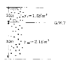
- 4.8t/m2
- 5.6t/m2
- 6.7t/m2
- 7.6t/m2
(정답률: 17%)
94. 현장다짐시 흙의 단위중량과 함수비 측정방법으로 적당하지 않은 것은?
- 코어절삭법
- 모래치환법
- 표준관입시험법
- 고무막법
(정답률: 31%)
95. 평판 재하 실험에서 재하판의 크기에 의한 영향(scaleeffect)에 관한 설명 중 틀린 것은?
- 사질토 지반의 지지력은 재하판의 폭에 비례한다.
- 점토지반의 지지력은 재하판의 폭에 무관하다.
- 사질토 지반의 침하량은 재하판의 폭이 커지면 약간 커지기는 하지만 비례하는 정도는 아니다
- 점토지반의 침하량은 재하판의 폭에 무관하다.
(정답률: 19%)
96. 크기가 30cm×30cm의 평판을 이용하여 사질토위에서 평판재하시험을 실시하고 극한지지력 20t/m2을 얻었다. 크기가 1.8m×1.8m인 정사각형기초의 총 허용 하중은? (단, 안전율 3을 사용)
- 90 ton
- 110 ton
- 130 ton
- 150 ton
(정답률: 알수없음)
97. 다음은 정규압밀점토의 삼축압축 시험결과 나타 낸것이다. 파괴시의 전단응력 τ와 수직응력 σ를 구하면?
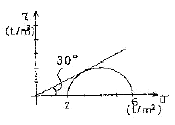
- τ = 1.73t/m2, σ = 2.50t/m2
- τ = 1.41t/m2, σ = 3.00t/m2
- τ = 1.41t/m2, σ = 2.50t/m2
- τ = 1.73t/m2, σ = 3.00t/m2
(정답률: 37%)
98. 3m×3m인 정방형 기초를 허용지지력이 20t/m2인 모래지반에 시공 하였다. 이 경우 기초에 허용지지력 만큼의 하중이 가해졌을 때, 기초 모서리에서의 탄성 침하량은 얼마인가? (단, I6=0.561, μ=0.5, Es=1500t/m2)
- 0.90 cm
- 1.54 cm
- 1.68 cm
- 2.10 cm
(정답률: 알수없음)
99. 그림과 같은 옹벽에 작용하는 주동토압의 합력은? (단, γsat=1.8t/m3, ø=30°, 마찰각 무시)
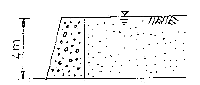
- 10.1 t/m
- 11.1 t/m
- 13.7 t/m
- 18.1 t/m
(정답률: 10%)
100. 부마찰력에 대한 설명이다. 틀린 것은?
- 부마찰력을 줄이기 위하여 말뚝표면을 아스팔트 등으로 코팅하여 타설한다.
- 지하수의 저하 또는 압밀이 진행중인 연약지반에서 부마찰력이 발생한다.
- 점성토 위에 사질토를 성토한 지반에 말뚝을 타설한 경우에 부마찰력이 발생한다.
- 부마찰력은 말뚝을 아래 방향으로 작용하는 힘이므로 결국에는 말뚝의 지지력을 증가시킨다.
(정답률: 알수없음)
6과목: 상하수도공학
101. 다음 하수관로 계획에 대한 설명 중 틀린 것은?
- 단면형상은 수리학적으로 유리하며 경제적인 것이 바람직하다.
- 관거부대설비의 견지에서 보면 합류식이 분류식보다 유리하다.
- 유속은 하류부가 상류부보다 느린 것이 좋다.
- 경사는 하류로 갈수록 완만하게 하는 것이 좋다
(정답률: 45%)
102. 분류식의 오수관거 설계시 계획하수량 결정에 고려하여야 하는 것은?
- 계획평균오수량
- 계획우수량
- 계획시간최대오수량
- 계획시간최대오수량에 우수량을 더한 값
(정답률: 34%)
103. 정수장에서 전염소처리설비의 목적과 관계없는 것은?
- 철, 망간의 제거
- 맛, 냄새의 제거
- 트리할로메탄의 제거
- 암모니아성 질소, 우기물의 처리
(정답률: 37%)
104. 효울이 90%인 모터에 의해 가동되는 펌프의 전달 효율은 80%이다. 0.5m3/sec의 물을 10m 되는 전양정으로 퍼 올릴때 요구되는 동력의 마력(HP)수는 약 얼마인가?
- 89 HP
- 93 HP
- 102 HP
- 113 HP
(정답률: 32%)
1⑤. 계획우수량 산정에 있어서 확률년수는 원칙적으로 몇 년으로 하는가?
- 2~3년
- 3~5년
- 5~10년
- 10년이상
(정답률: 알수없음)
106. SVI에 대한 다음 설명 중 잘못된 것은?
- 활성슬러지의 침강성을 나타내는 지표이다.
- SVI가 100전후로 활성슬러지의 침강성이 양호 한 경우에는 일반적으로 압밀침강에 해당된다.
- SVI가 적을수록 슬러지가 농축되기 쉽다.
- SVI가 높아지면 MLSS도 상승한다.
(정답률: 46%)
107. MLSS 농도 2,000mg/L의 혼합액 1L 시험관에 취해 30분간 정지시켰을 때 침강슬러지가 차지하는 부피가 200mL이었다. 이 슬러지의 SVI는?
- 120
- 100
- 80
- 60
(정답률: 36%)
108. Ripple's method에 의하여 저수지 용량을 결정하고자 할 때, 그림에서 최대 갈수량을 대비한 저수 개시 시점은? (단,
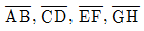
직선은 직선에 평행)- ①지점
- ②지점
- ③지점
- ④지점
(정답률: 알수없음)
109. 내경 300mm인 급수관에 유량 0.09m3/s이 만수위로 흐르고 있다. 이 급수관의 직선거리 100m에 생기는 손실수두는? (단, V=0.84935 C0.63 I0.54이고, C=100으로 가정함)
- 0.61m
- 0.72m
- 0.86m
- 0.97m
(정답률: 6%)
110. Stokes의 침강속도를 구하는 식은? (단, Vs는 침강속도, ps및 p는 토립자 및 물의 밀도, g는 중력가속도, μ는 점성계수, d는 토립자의 입경)
(정답률: 25%)
111. 배수관망의 구성방식 중 격자식에 비교하여 수지상식의 설명으로 잘못된 것은?
- 수리계산이 간단하다.
- 사고시 단수구간이 크다.
- 제수밸브를 많이 설치해야 한다.
- 관의 말단부에 물이 정체되기 쉽다.
(정답률: 36%)
112. 소규모하수도란 하나의 하수도 계획구역에서 계획 인구가 몇 명 이하인 하수도를 말하는가?
- 1,000명
- 5,000명
- 10,000명
- 50,000명
(정답률: 9%)
113. 슬러지 농축조에서 함수율 99%인 생 슬러지를 투입하여 함수율 96%의 농축 슬러지를 얻었다. 농축 후의 슬러지량은? (단, 처음의 슬러지량을 V로 가정한다.)
(정답률: 알수없음)
114. 하수도 시설을 계획할 때 원칙적으로 계획목표년도는 몇 년인가?
- 10년
- 20년
- 30년
- 40년
(정답률: 42%)
115. 연평균 인구증가율이 일정하며 장래 발전가능성 있는 도시의 계획급수량 산정을 위해 인구조사를 한 결과, 다음표롸 같았다. 2000년도의 인구를 등비급수법으로 추정하면 약 얼마인가?
- 223,000명
- 222,000명
- 221,000명
- 220,000명
(정답률: 6%)
116. 다음은 공동현상(cavitation)의 방지책을 설명한 것이다. 틀린 것은?
- 마찰손실을 작게 한다.
- 펌프의 흡입관경을 작게 한다.
- 임펠러(impeller)속도를 작게 한다.
- 흡입수두를 작게 한다.
(정답률: 17%)
117. 하수관의 접합방식 중 수위상승을 방지하고, 양정고를 줄일 수 있어 펌프로 배수하는 지역에 적합 하지만, 상류부에서는 동수경사선이 관정보다 높이올라 갈 우려가 있는 접합방식은?
- 수면 접합
- 관정 접합
- 관저 접합
- 관중심 접합
(정답률: 31%)
118. 수증의 질소화합물의 질산화 진행과정으로 옳은 것은?
- NH3-N, NO2-N, NO3-N
- NH3-N, NO3-N, NO2-N
- NO2-N, NO3-N, NH3-N
- NO3-N, NO2-N NH3-N
(정답률: 28%)
119. 양수량이 8m3/min, 전양저 4m, 회전수 1160rpm인 점프의 비회전도는?
- 316
- 985
- 1160
- 1436
(정답률: 42%)
120. 다음 중 부영양화된 호수나 저수지에서 나타나는 현상은?
- 각종 조류의 광합성 증가로 인하여 호수 심층의 용존산소가 증가한다.
- 조류사멸에 의해 물이 맑아진다.
- 바닥에 인, 질소 등 영양염류의 증가로 송어, 연어 등 어종이 증가한다.
- 냄새, 맛을 유발하는 물질이 증가한다.
(정답률: 47%)